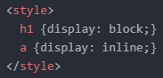
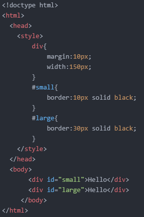
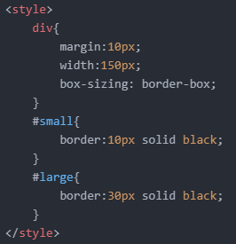

- Block level element를 Inline element로 바꾸기
- box-sizing 속성에 대해 알아보기
- 마진 상쇄(겹침) 현상(Margin-collapsing)에 대해 알아보기
이전에 Block level element와 Inline element가 무엇인지 배웠습니다. (참조)
오늘의 첫 번째 목표는 Block level element를 Inline element로 바꿔보는 것입니다.
방법은 아주 간단합니다.
앞서 배웠듯이 'h2' 태그와 'a' 태그의 기본 영역은 다음과 같았습니다.
이때 다음과 같은 코드를 적용시켜주면 해당 영역이 바뀌게 됩니다.
다음으로는 box-sizing 속성에 대해 알아보겠습니다.
box-sizing 속성이란 기존 방법 외 다른 방법으로 박스 크기를 화면에 표시하는 속성입니다.
예를 들어, 다음과 같은 코드가 있습니다.
그러면 위와 같이 화면에 출력되는데요.
'div' 태그에 'width:150px' 속성을 적용했지만 테두리(border)의 크기 때문에 똑같은 길이로 출력되지 않았습니다.
그리고 보시다시피 텍스트 영역만 똑같은 길이로 출력되었죠.
이때, box-sizing 속성을 이용하면 테두리를 포함한 전체 길이를 같게 만들 수 있습니다.
다음과 같은 코드를 적용하기만 하면 됩니다.
보시다시피, 'box-sizing: border-box;' 선언은 텍스트 영역의 크기를 줄여준다는 것을 알 수 있습니다.
오늘의 마지막 목표는 마진 상쇄(겹침) 현상에 대해 알아보는 것입니다.
박스 모델을 공부할 때 마진(Margin)은 여백을 의미한다고 했습니다.
이 여백이 어떠한 이유들로 사라지는 현상이 발생하는데, 이를 마진 상쇄(겹침) 현상이라고 합니다.
이 개념은 어렵기 때문에 전문가의 설명으로 대신하겠습니다.
아래 세 가지 영상들을 봐주시길 바랍니다.
오늘은 여기까지 하겠습니다.
그럼 내일도 화이팅!